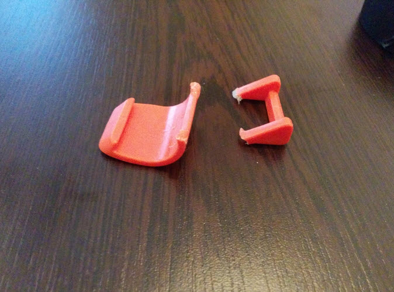
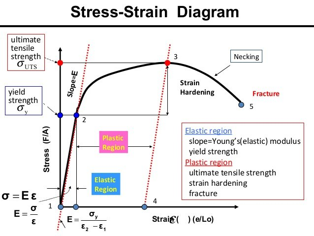
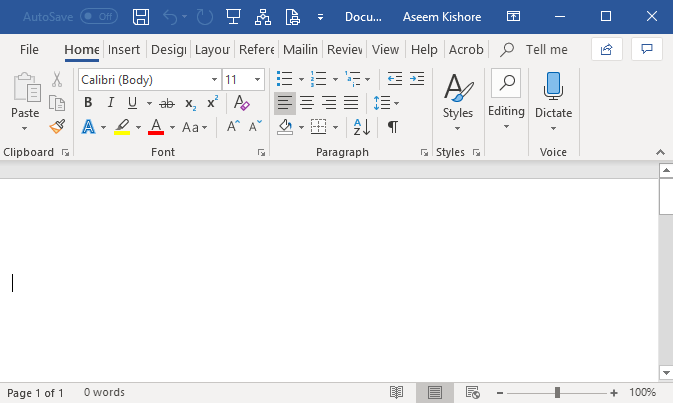
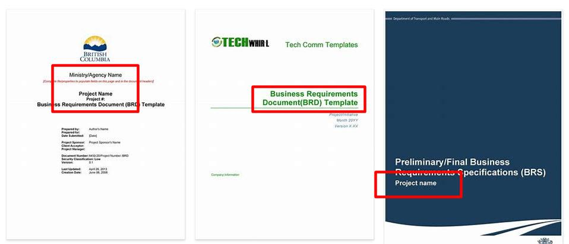
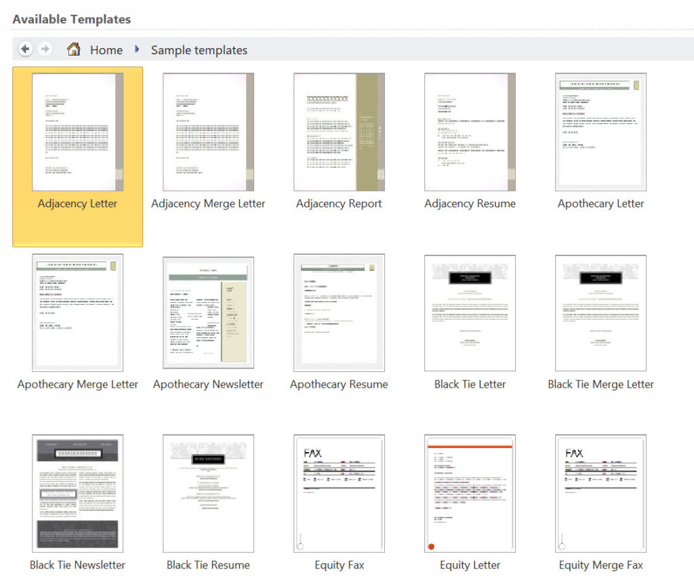
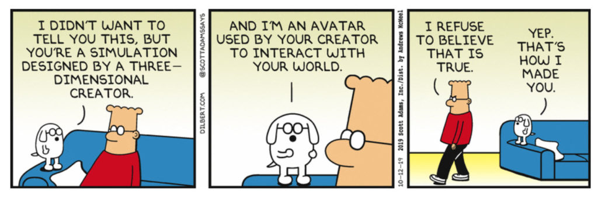
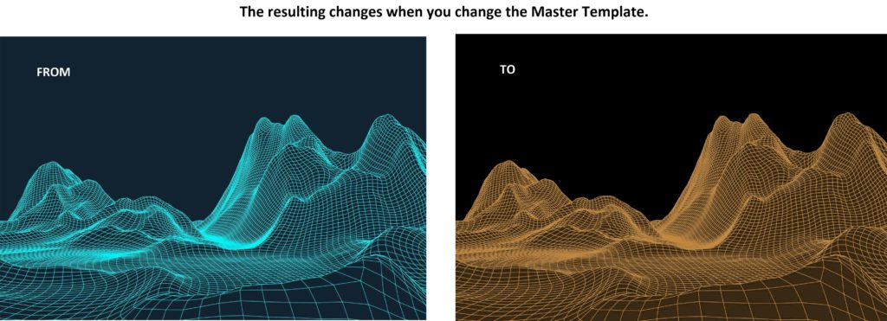

This is a very advanced article on world-line travel. In it we discuss something new. It is something that has never happened before, or at least while I was in MAJestic, it never happened. And I was unaware of it, or the consequences of it. And we are going to talk about it here. Maybe shine a light or two on what is going on.
It consists of changes to the Master template.
Because this is such an advanced subject, we will put this in the advanced section of world-line travel studies.
What triggered this
An unusual and peculiar shift in the world-line template was detected.
Templates tend to be “rock hard” and stable. They are the foundations from with all the personal templates are derived from. Tend to be, and thus are always assumed to be so.
However, the fundamental Master template changed.
Now, I have NEVER experienced this before. And it is a very rare, rare event. In fact, while I know that they can be altered by anchoring, I had no idea that they could dramatically altered in such a fundamental manner.
I have previously described anchoring of mass consciousnesses. I would “pull down”, or “twist” reality, and then the elastic nature of the template would return back to it’s previous state with whatever bad events that were to happen avoided.
What has occurred is something similar. Only instead of the elastic nature of reality “snapping back” to it’s previous state, it has snapped into a new state.
How MM detected it
Oh, Lordy!
Just because my ELF probes are retired and my involvement with MAJestic has officially been terminated, my EBP’s are all still active. And they are continually working with my physical and non-physical bodies on numerous levels.
So this is how I can tell.
You see, it’s really difficult to describe. However, imagine that every day you wake up to a overcast day, with some apartment buildings in the distance, and some traffic on the road. Then one day, you notice that the sky is blue and sunny, and that instead of apartments you see green hills with grazing sheep and no cars.
You NOTICE the difference.
It’s like that.
The way I “feel” or “sense” the template structure has changed. It feels substantially different.
Like how one day your are feeling the trunk of a tree and the bark is rough, and another day the bark is smooth and glossy. It is like one day you are used to drinking hot coca beverages, and the next day you are drinking ice cold mint tea.
It is, however, a subtle difference.
It’s like drinking red or black tea for decades, and then one day you are drinking Oolong Tea, or Green Tea. It’s like always drinking Folgers coffee and then suddenly drinking Maxwell House brand coffee. It’s like always smoking Marlboro cigarettes and then suddenly smoking Camel. It’s like always drinking Budweiser beer and then suddenly drinking Genesis Stout.
It’s very subtle.
There are no words for me to describe this, simply because the experience is so unique and it involves a combination of senses to form a whole. And no, there are no alpha-numeric characters or symbols involved. It’s like the entire interface is just, well… different.
Anyways, you just have to trust me on this. The Master template has changed. Not any of the subsequent “child” templates. Simply the Master Template.
An Example
Consider the elasticity of plastic. Templates (pretty much) follow similar rules as plastic does. If you try to change a template, it will “bounce back” after a spell. But you can make permanent changes to it with more effort.
For plastic…
Plastic can be bent and twisted and eventually it will snap back into shape. (This is shown in the flat line from point 1 to point 2 in the diagram below.) It is the “Elastic Region”.
But if you deform the plastic past a certain point, it will not snap back exactly. No. Instead it will go to a new location and a new shape. (This is shown in the diagram below. Point 2 to point 3.) It is the “Plastic Region”.
And if you apply extreme pressure on it, it will actually break and snap into two parts. (Point 5 in the diagram below.)

The diagram for plastic deformation
Here is the diagram that I have referred to above.
- Note point 1 – 2. This is the “Elastic Region”.
- Note point 2 – 3. This is the “Plastic Region”.
- Note point 5. This is the “Point of fracture.”

For templates…
When I was active in MAJestic operations, all of my efforts for anchoring was in the point 1 to point 2 region, the “Elastic Region”. I would “anchor” clusters of world-lines, and in so doing, prevent certain events or changes. Then things would mostly return to the previous shape.
I say "mostly" because often there would be slides that would place my consciousness elsewhere than where I started off from. Specifically, and so not to be confused, "slides" were an event that my consciousness experienced as I was "anchoring" world-lines. They were wholly associated with me, and my observation of the reality around me.
What is going on now (This peculiar change to the Master Template.) is that something has moved the fundamental baseline template to the “Plastic Region”. It changed permanently, and can no longer return to it’s previous shape or form.
Quick review of key points
I don’t want to regurgitate the entire MM teachings here. Just point out some basics.
- Our consciousness travels moment to moment into world-lines.
- Each world-line has it’s own past and future.
- But our consciousness only spends a fraction of time in it.
If you map the path of travel, you get your life-line. And life-lines can be placed on a three dimensional map known as a “template”. This map is the highest probability of travel granted to your consciousness. With geography controlled by difficulty.
- Templates are established at birth. As such they are known as Pre-Birth World-Line Templates.
- You can “slide off” the previously established template on to a new one. You do this by directed thought.
From the point of view of your consciousness, the only things that matter are your [1] template map, [2] your directed slides, [3] the world-lines that you visit, and [4] the geography of the map.
However, the thoughts of all consciousnesses define the terrain of the template maps. Not just one person. They are not hard and fixed. Like concrete. They are like soft foam mats that can be moved and pushed and bent.
This is why MM was so involved in “anchoring”.
What do I mean templates…
Consider a word processor.
If you use Microsoft Word (MS Word) it will come with a default document template. This is the blank document that always comes up in the software program when you turn it on and start a new file. 99% of all users start out with this template. This is the default template.

Now, if you work at company, they might have a “default” company template. Many, but not all companies do this you know. It depends on the company. But the truth be told that most large companies have very distinct rules on the formats of the documents that you send out. For instance, they would specify the font you use, and the colors that you use. They would specify the logo that you use as well, as well as the layout.
This is a modified “MS default template”.
It will include such things as the company stationary, address, phone numbers and font and size selection. All users in a certain company will use this template. This is the company template. Here’s some examples…

Now, that being said, when you start in the company you will then take this company template, and customize it as your own.In the space that says, “Project Name”, you will enter the name of the project. And the same goes for the date and all the other particulars.
You will add YOUR name, and YOUR title. You will add YOUR extension, and e-mail data to it. This will be your template.
And each letter, note, or message you will write will be a new document using this template. It will have it’s own document number, date, author and name.
Well…
This is similar in how your world-line travel occurs. If you consider each world-line that you visit to be a “new document“, then your world-line template map is the equivalent to “Your template“.
And whether you stay on that template or slide onto a new template. It is still your template.
Your template, in turn, is derived from your Pre-birth world-line template. And this is equivalent to the “Company template“.
And when you and everyone else is in “Heaven” and deciding on what your next reincarnation will be on the earth, you will use the “default template” that came with the software package. We call this the Master Template.
Template hierarchy
To recap, this is the general hierarchy for MS Word templates…
- General Microsoft Default Template
- Company Official Template
- Your Personal Occupation / Position Template
- Your individual documents
And for world-line travel, it looks like this…
- Master Template
- Pre-birth World-Line Template
- World-line Template Map
- Individual World-lines
So what is going on?
Every MM reader can do something that 99% of the population cannot do. They have the skill set to “slide” off their pre-birth world-line template. And that is how you can change your life. They travel life on their own world-line template map.
But just about everyone else is stuck on their pre-birth world-line template. they are just living life like a fated robot.
But all templates are derived from the most fundamental template; the Master Template. And it has changed.
How can I describe the changes?
It is such a subtle change that most people will not catch it, nor understand it. To most people it will not look like anything changed. But you know, the template rules have completely changed.
Consider what happens to you Microsoft Word (MS Word) documents when you change the default temple…

The content will remain the same, but how the content interacts with each other in a unified visual style will be different.
Your past will not change. Your slides, your world-lines none of those things will change. All the things that you have learned about and use on MM will not change.
What will change is how your consciousness interacts with reality.
For instance, any of these things can (might) change.
- How easy or hard it is to start Lucid Dreaming.
- The ability to slide to new templates.
- How directly involved your thoughts are with the fabric of your reality.
- The aspects of time relative to where you are going in your direction vector.
- The life-span of a typical human can increase or decrease.
- The ability to perform non-physical reality travel.
- The ability to sense or not, the non-physical reality.
- The interactions that we have, or don’t have with the Mantids
And so on and so forth.
But since it is far to early to know what we are working with, what the changes will be is anyone’s guess.
It’s literally a “new ballgame”.
A whole new ballgame, a A completely altered situation, as in It will take a year to reassign the staff, and by then some will have quit and we'll have a whole new ballgame. This expression comes from baseball, where it signifies a complete turn of events, as when the team that was ahead falls behind. [ Colloquial; 1960s] - A New Ballgame Idiom
Why did the Master Template change?
I do not know.
Obviously the previous Master Template was established by the “Old Empire”.
“The bureaucracy that controlled the former “Old Empire” was from an ancient space opera society, run by a totalitarian confederation of planetary governments, regulated by a brutal social, economic, and political hierarchy, with a royal monarch as its figurehead. This type of government emerges with regularity on planets where the citizens abandon personal responsibility for autonomous, self-regulation.”
Since the “Old Empire” no longer exists, we have to assume that the Type-1 Greys have (somehow) managed to change, reset or alter the Master Template to achieve their goals and objectives. After all, “The Domain”, or the Empire of the Type-1 Greys vanquished the “Old Empire” and took over completely.
Their goals are (pertaining to this “Prison Planet”, as I have discussed before, to free consciousnesses from living a reincarnation existence over and over, and over, and over without end.
Once the IS-BEs expelled from the “Old Empire” arrived on Earth, they were given amnesia, and hypnotically tricked into thinking that something else had happened to them. The next step was to implant the IS-BEs into biological bodies on Earth. The bodies became the human populations of “false civilizations” which were designed and installed in the minds of IS-BEs to look completely unlike the “Old Empire”. — Except from the Top Secret manuscripts from 1947 Roswell, published in the book ALIEN INTERVIEW
So, while it could be to prevent damage to the physical environment on the earth for one reason or the other, it can also be associated with non-physical changes and realities that we have no knowledge or understanding of.
Our Reality
The “reality” that earth-bound humans inhabit is an artificial construct. It is much like the movie “The Matrix”, except that it is an entire universe with it’s own separate “Heaven Universe”.
This artificial reality is a construct.

And the base line code for it is called the Master Template.
It is the fundamental reality that keeps IS-BE consciousnesses locked within this physical geographical space. And while there are many extremely intelligent and capable consciousnesses that inhabit this reality, the cunningness of the system keeps the consciousnesses focused on other things instead of their abilities and how to escape the prison.
“An “untouchable” classification of IS-BEs also includes a wide variety of “political prisoners”. This includes IS-BEs who are considered to be non-compliant “free thinkers” or “revolutionaries” who make trouble for the governments of the various planets of the “Old Empire”. Of course, anyone with a previous military record against the “Old Empire” is also shipped off to Earth. A list of “untouchables” include artists, painters, singers, musicians, writers, actors, and performers of every kind. For this reason Earth has more artists per capita than any other planet in the “Old Empire”. “Untouchables” also include intellectuals, inventors and geniuses in almost every field. Since everything the “Old Empire” considers valuable has long since been invented or created over the last few trillion years, they have no further use for such beings. This includes skilled managers also, which are not needed in a society of obedient, robotic citizens. Anyone who is not willing or able to submit to mindless economic, political and religious servitude as a tax-paying worker in the class system of the “Old Empire” are “untouchable”. ... and sentenced to receive memory wipe-out and permanent imprisonment on Earth. The net result is that an IS-BE is unable to escape because they can’t remember who they are, where they came from, where they are. They have been hypnotized to think they are someone, something, sometime, and somewhere other than where they really are.” ~ Alien Interview
__________________
“…the very unusual combination of “inmates” on Earth – criminals, perverts, artists, revolutionaries and geniuses – is the cause of a very restive and tumultuous environment. The purpose of the prison planet is to keep IS-BEs on Earth, forever. Promoting ignorance, superstition, and war between IS-BEs helps to keep the prison population crippled and trapped behind “the wall” of electronic force screens.” ~ Alien Interview
What the change is…
Anyways, you just have to trust me on this. The Master template has changed. Not any of the subsequent “child” templates. Simply the Master Template.

Is this change good or bad?
It’s certainly not “neutral”.
And I have this strong belief that it is a “good” thing that is in favor of the majority of the people on this planet. Maybe 80% of humans.
My GUESS is that some aspects of the Master Template were altered to delete various aspects of “Prison Planet” snares, entanglements, monitoring, suppression, manipulation, memory suppression, and reincarnation. But what they are specifically is unknown.
In my mind, this is probably a very, very good thing.
It also implies that the timetable for recovery of this “Prison Planet” environs has been advanced substantially.
Does this mean that World War III will occur or other planetary changes?
No.
It has no bearing at all on the general terrain of the templates. The terrain of the templates; the mountains, the valleys, the flat lands, they will all continue to exist as they always have.
It will not change any Geo-political situations, or up-coming physical changes.
The only impacts will be on the relationship of your consciousness to the physical and the non-physical realities. Not on the realities themselves.
Should I be worried?
No.
There is no need to worry or be upset. Things are changing in a good way, and (my guess) is that the changes will benefit those that are able to control their thoughts and actions within this reality.
This includes all MM readers, and most especially those that perform Prayer Affirmation Campaigns.
Why do I refer to the changes as peculiar…
The word “peculiar” means “strange, odd, or unusual”.
In my entire life, and that includes a long, long time in MAJestic active, and retired, I have never had or experienced this event. It is indeed strange, and to me, very, very odd. It is certainly unusual.
Most people, however, will not notice anything different.
Do I need to do anything different?
No.
Continue living life, and running your affirmation prayer campaigns as you normally do.
As time progresses and we see what we are working with here, I will establish some guidelines and suggestions to better help everyone deal with the changes to their new advantages.
I expect and anticipate that MM followers will have a far easier time in the Prayer Affirmations Campaigns, and they will start to see results quicker and with more “stickiness” than what you all would experience previously.